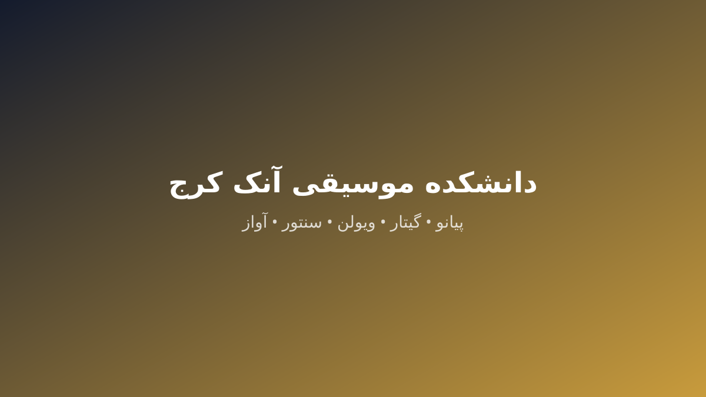

[INTERNAL_DATA_NEEDED]
مدرس پیانو کلاسیک، پاپ و کودک
نمونه اجرای صوتی/تصویری — [INTERNAL_DATA_NEEDED]
دانشکده موسیقی و آواز آموزشگاه آنک در کرج با ۱۴ دوره تخصصی، اساتید خانم و آقا، کلاس خصوصی و گروهی و شهریه شفاف برگزار میشود؛ مشاوره و تعیین سطح رایگان و دسترسی مستقیم از فردیس.
این صفحه پاسخ مستقیم جستوجوهای «آموزش تئوری موسیقی در کرج»، «آموزش موسیقی در کرج»، «بهترین کلاس موسیقی در کرج»، «بهترین کلاس های موسیقی کرج»، «کلاس موسیقی خوب در کرج»، «کلاس موسیقی در کرج» است.
و همچنین: «کلاس های موسیقی کرج»، «ادرس کلاس موسیقی در کرج»، «شهریه کلاس موسیقی در کرج»، «قیمت کلاس موسیقی کرج»، «هزینه کلاس موسیقی در کرج»

تئوری پایه
ترم ۱
نتخوانی، میزان، کششها و دانگها
سلفژ و شنوایی
ترم ۲
تربیت شنوایی، دیکته ملودیک و ریتمخوانی
هارمونی مقدماتی
ترم ۳
آکوردشناسی و همراهی
این جدول پاسخ «شهریه کلاس موسیقی در کرج»، «قیمت کلاس موسیقی کرج»، «هزینه کلاس موسیقی در کرج» است.
| دوره | خصوصی (تومان) | گروهی (تومان) | تعداد جلسات | مدت هر جلسه |
|---|---|---|---|---|
| کلاس و آموزش پیانو | ۱٬۲۰۰٬۰۰۰ | ۶۰۰٬۰۰۰ | ۸ | ۳۰ دقیقه |
| کلاس و آموزش گیتار (کلاسیک، پاپ و الکتریک) | ۱٬۰۰۰٬۰۰۰ | ۵۰۰٬۰۰۰ | ۸ | ۳۰ دقیقه |
| کلاس و آموزش ویولن و ویولن سل | ۱٬۱۰۰٬۰۰۰ | ۵۵۰٬۰۰۰ | ۸ | ۳۰ دقیقه |
| کلاس آموزش آواز و خوانندگی | ۱٬۰۰۰٬۰۰۰ | ۵۰۰٬۰۰۰ | ۸ | ۴۵ دقیقه |
| کلاس آموزش تار و سهتار | ۱٬۰۰۰٬۰۰۰ | ۵۰۰٬۰۰۰ | ۸ | ۳۰ دقیقه |
| کلاس و آموزش سنتور | ۱٬۰۰۰٬۰۰۰ | ۵۰۰٬۰۰۰ | ۸ | ۳۰ دقیقه |
| کلاس و آموزش تنبک | ۸۰۰٬۰۰۰ | ۴۰۰٬۰۰۰ | ۸ | ۳۰ دقیقه |
| کلاس آموزش دف و دفزنی | ۸۰۰٬۰۰۰ | ۴۰۰٬۰۰۰ | ۸ | ۴۵ دقیقه |
| کلاس و آموزش کمانچه | ۱٬۱۰۰٬۰۰۰ | ۵۵۰٬۰۰۰ | ۸ | ۳۰ دقیقه |
| کلاس و آموزش تنبور | ۱٬۱۰۰٬۰۰۰ | ۵۵۰٬۰۰۰ | ۸ | ۳۰ دقیقه |
| کلاس آموزش فلوت، پنفلوت و فلوت لاکوتا | ۱٬۰۰۰٬۰۰۰ | ۵۰۰٬۰۰۰ | ۸ | ۳۰ دقیقه |
| کلاس و آموزش هنگدرام | ۹۰۰٬۰۰۰ | ۴۵۰٬۰۰۰ | ۸ | ۴۵ دقیقه |
| کلاس آموزش ارگ و کیبورد | ۹۰۰٬۰۰۰ | ۴۵۰٬۰۰۰ | ۸ | ۳۰ دقیقه |
| آموزشگاه و کلاس موسیقی کودک (ارف) | ۷۰۰٬۰۰۰ | ۳۵۰٬۰۰۰ | ۸ | ۴۵ دقیقه |
هیچ هزینه پنهانی وجود ندارد؛ موارد جانبی مانند کتاب و آزمون در جلسه مشاوره شفاف اعلام میشود.
[INTERNAL_DATA_NEEDED] — این بخش در انتظار دریافت داده رسمی از آموزشگاه است؛ هیچ اطلاعاتی ساخته نشده است.
مدرس پیانو کلاسیک، پاپ و کودک
نمونه اجرای صوتی/تصویری — [INTERNAL_DATA_NEEDED]
استاد گیتار کلاسیک، پاپ و گیتار الکتریک
نمونه اجرای صوتی/تصویری — [INTERNAL_DATA_NEEDED]
مدرس گیتار ویژه بانوان و کودکان
نمونه اجرای صوتی/تصویری — [INTERNAL_DATA_NEEDED]
استاد ویولن و ویولن سل
نمونه اجرای صوتی/تصویری — [INTERNAL_DATA_NEEDED]
مدرس آواز سنتی، پاپ و صداسازی بانوان
نمونه اجرای صوتی/تصویری — [INTERNAL_DATA_NEEDED]
استاد تار و سهتار سنتی
نمونه اجرای صوتی/تصویری — [INTERNAL_DATA_NEEDED]
استاد سنتورنوازی
نمونه اجرای صوتی/تصویری — [INTERNAL_DATA_NEEDED]
هنرجویان فردیس با مترو کرج ۵ دقیقه پیاده تا پردیس مرکزی فاصله دارند و شیفت فشرده آخر هفته برای آنها زمانبندی میشود.
پاسخ مستقیم به «ادرس کلاس موسیقی در کرج»

کرج، شاه عباسی، خیابان دانشکده جنوبی، روبروی کتابخانه امیرکبیر، بنبست کیهان، آموزشگاه سینمایی آنک؛ تماس: 026-32205016.
شهریه هر دوره در جدول مقایسهای همین صفحه به تفکیک خصوصی و گروهی آمده است؛ ارزانترین دوره گروهی از ۳۵۰٬۰۰۰ تومان شروع میشود.
شهریه هر دوره در جدول مقایسهای همین صفحه به تفکیک خصوصی و گروهی آمده است؛ ارزانترین دوره گروهی از ۳۵۰٬۰۰۰ تومان شروع میشود.
شهریه هر دوره در جدول مقایسهای همین صفحه به تفکیک خصوصی و گروهی آمده است؛ ارزانترین دوره گروهی از ۳۵۰٬۰۰۰ تومان شروع میشود.
آموزشگاه آنک با 20 سال سابقه، دارای مجوز رسمی از وزارت فرهنگ و ارشاد اسلامی و ثبت در اداره آموزش فنی و حرفهای و ۱۴ دوره فعال در این حوزه فعالیت میکند؛ جلسه مشاوره و تعیین سطح رایگان امکان ارزیابی بدون هزینه را میدهد.